ギターを作るWBSを作ってみた
今回は「WBSで覗いてみた」として、「ギターを作るWBS」を作成しました。木工加工から塗装・乾燥・組み立てに至る全工程の作業分解、クリティカルパスの特定、さらには担当者1人に集中させた場合の工期延伸や見習いスタッフ追加による短縮効果まで、WBSを通じて詳しく検証していきます。
※そもそも「WBSとは何か？」について詳しく知りたい方は、こちらの記事「WBSの勘所」も合わせてご覧ください。
1. ギター作成プロジェクトのWBSを作る
まずはギター製作の工程を参考に、完成までの全作業をWBSに分解してみます。
今回参考にしたのは、エレキギターの自作工程を細部まで詳しく記録・公開されているWebサイト「Blackend」さんです。
とことん手作りにこだわった製作工程をもとに洗い出した、ギター作成プロジェクトのWBSがこちらです。まずは工程のアウトラインを概要レベルに設定した画面から確認します。
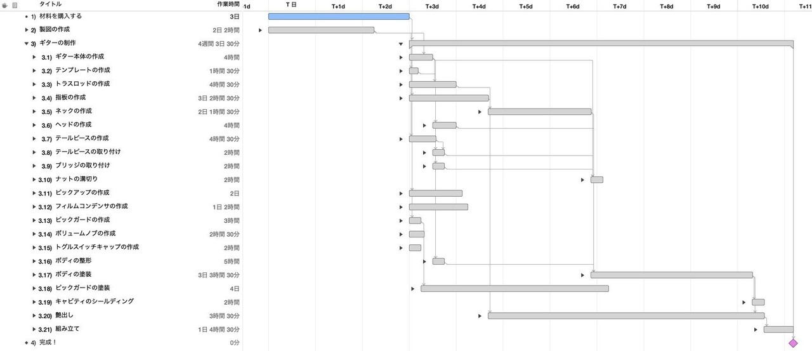
担当者を誰も割り当てず、並行作業を最大限に考慮した状態では11日間の工期となることが分かります。これが本プロジェクトにおける理論上の最短納期ラインです。ここから実際に人員を割り当てていくと、制約によって工期は延びることはあっても、これ以上短くなることはありません。
続いて、すべてのアウトラインを展開した詳細なWBSがこちらです。
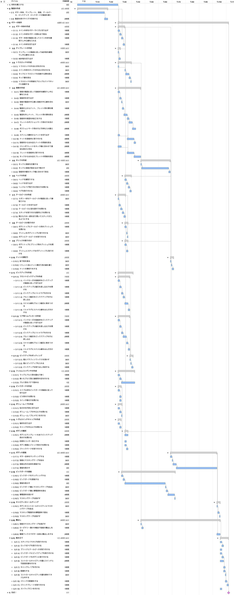
木工加工から塗装、配線、パーツの組み込みまで、膨大な工程が存在することが一目で分かります。この状態で、プロジェクト全体の最短工期を決定づけている最長経路（クリティカルパス：ピンク色で表示されたタスク群）を確認してみます。
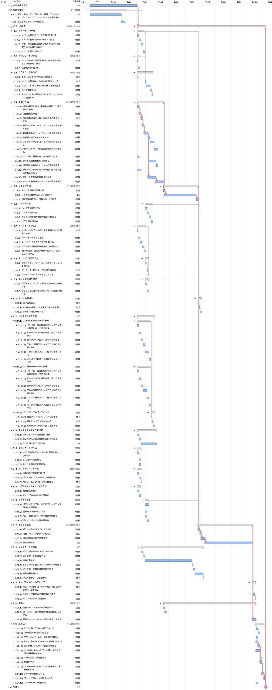
クリティカルパスを追うことで、どの作業の遅れがプロジェクト全体の遅延に直結するかが明確になります。
2. 全ての作業をギター職人に担当させてみる
次に、すべての作業を熟練の「ギター職人」1人に担当させた場合をシミュレーションしてみます。リソースを1名に集中させ、作業の重複を解消する「平準化」を行います。
まずは概要レベルのWBSです。
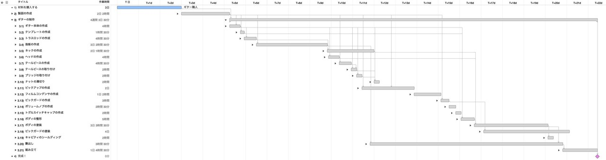
平準化を行った結果、並行して進められたはずの作業が直列化し、当初11日だった工期が一気に22日間まで倍増しました。続いて詳細なガントチャートを確認してみます。
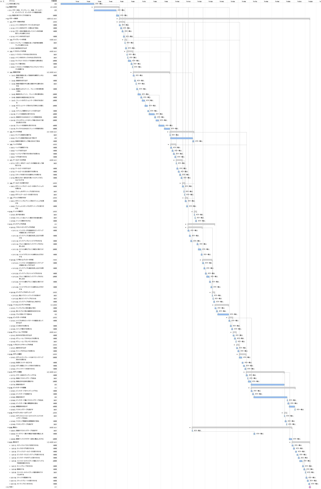
1人の作業者が順を追って作業を進めるため、タスクが一本の線のように直列に積み上がっていることが分かります。非常にわかりやすい反面、納期面では大きな課題が残ります。
3. 見習いを1名雇ってみる
22日間の工期を短縮するため、新たに「見習い」を1名採用し、合計2名体制で作業を分担してみます。
概要レベルのWBSを確認します。
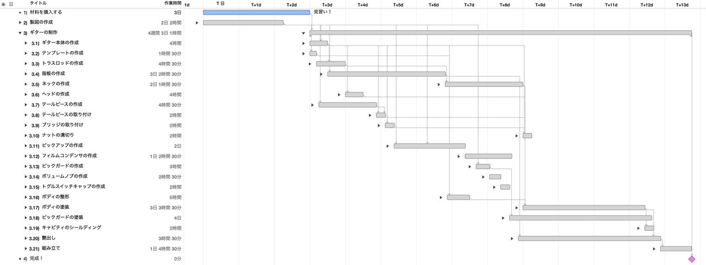
2名体制で適切に作業を分散させた結果、工期は一気に13日間まで短縮されました。詳細なスケジュールを確認してみます。
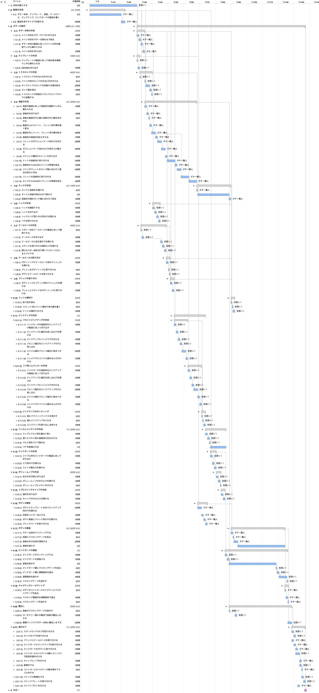
職人の負荷が見習いへ適切に分散され、並行作業が効果的に機能していることが分かります。
4. 見習いをさらに1名雇ってみる
さらなる納期短縮を目指し、見習いをもう1名追加して合計3名体制（職人1名＋見習い2名）でシミュレーションしてみます。
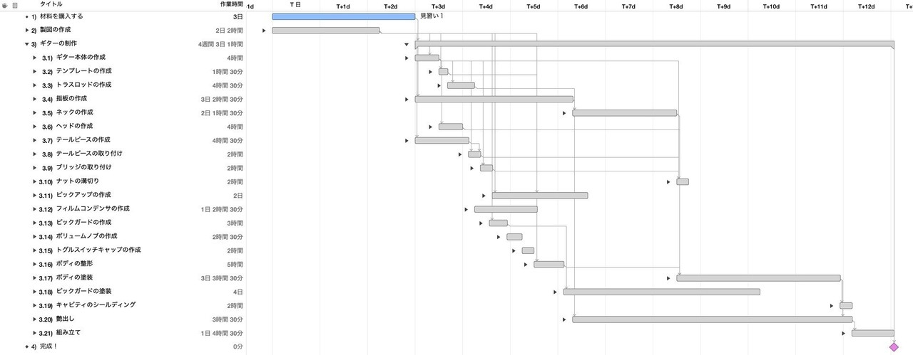
結果として、工期は12日間となりました。人員を1名増やしたものの、工期は1日しか短縮されていません。詳細なガントチャートを確認してみます。
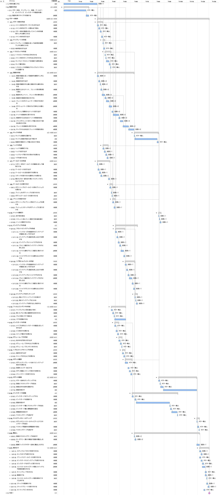
ギター作りには塗装後の「乾燥時間」など、どうしても一定の時間を置かなければ進められない物理的な待ち時間（クリティカルパス）が存在します。そのため、人員を無制限に投入しても、あるラインを超えると工期の短縮効果は限定的になります。
今回のケースでは、ギター製作における最適な要員体制は概ね2名であることが分かります。もし見習い2名体制を採用する場合でも、作業が集中する前半の6日間に限定してアサインするなど、費用対効果を意識したリソース計画が重要になります。
最後に、3名それぞれの作業割当状況（ワークロード）を確認してみます。
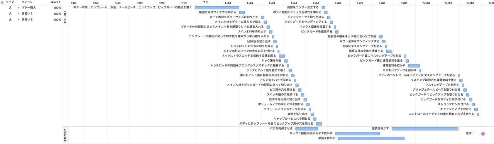
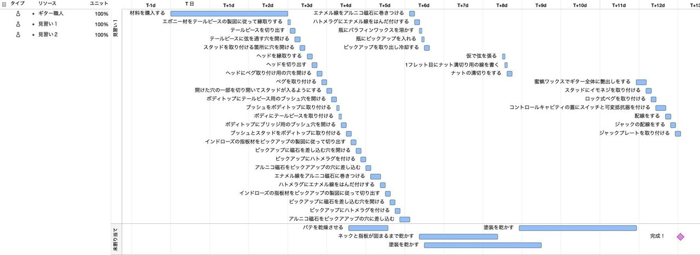
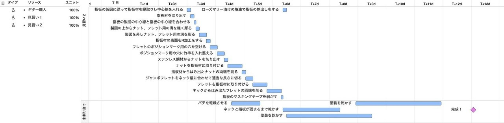
終わりに
複雑で工程数の多いギター作りであっても、WBSに落とし込んでクリティカルパスやリソース（人員）の割り当てを検証することで、ボトルネックの所在や最適なチーム構成が明確になります。
WBSはプロジェクトの構造化と見通しを向上させる強力なツールです。今回の検証が、日常の業務やプロジェクト計画におけるスケジュール設計・人員配置のヒントになれば幸いです。
なお、プロジェクト計画の基礎となるWBSの作り方や平準化の考え方については、「WBSの勘所」や「ガントチャートの決め手は平準化」でも詳しく解説していますので、ぜひ合わせてご覧ください。
最後までお読みいただきありがとうございました。